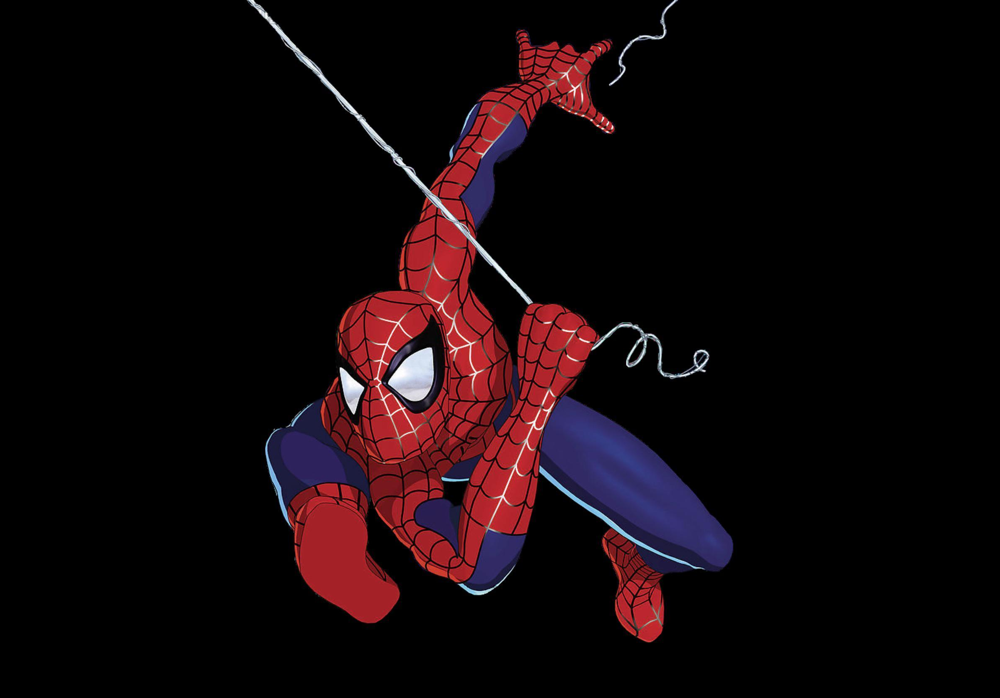

<div id="about" class="container-fluid about-section">
  <div class="container">
    <div class="row">
      <!-- Text Column -->
      <div class="col-md-6">
        <h2 class="text-center mb-4">About Spidey</h2>
        <p>
          A bite from a spider somehow granted teenager Peter Parker its
          arachnid abilities and instead of using them for personal gain, he
          decided to help others with them. An orphan living with his aunt, May
          Parker, the boy chose to wear a mask while fighting crime so as not to
          burden her with his actions. Calling himself Spider-Man and sporting a
          pair of web-shooting devices he’d constructed, Parker wound up in
          internet videos which attracted the attention of Tony Stark. The
          billionaire industrialist deduced Spider-Man’s secret identity and
          approached Parker at his and May’s home in Queens, New York
        </p>
      </div>
      <!-- Image Column -->
      <div class="col-md-6 d-flex align-items-center justify-content-center">
        
      </div>
    </div>
  </div>
</div>
